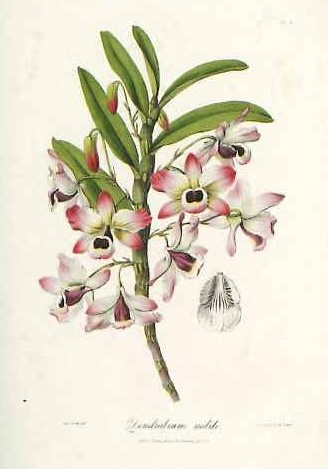

作品名 「ランの花冠」
花言葉 「美しい淑女」「優雅」「幸福が飛んでくる」「純粋な愛」
ラン
「美しい淑女」
英語では「Orchid（オーキッド）」で、ギリシア語の睾丸を意味する「ορχις (orchis)」が語源であるが、これはランの塊茎（バルブ）が睾丸に似ていることに由来します。 独特な形の花を咲かせるランの多くが美しさや気品を備えています。ラン全般の花言葉である「美しい淑女」「優雅」は、その花姿に由来するといわれます。
ランの花冠
ジョン・リンドレー
ランは、19世紀頃絶大なブームだった。特に熱帯の色彩豊かで不思議な形をしたランが愛好された。ランのブームは第一次世界大戦が始まるまで続いた。19世紀のランブームを刺激したラン図譜としてはジョン・リンドレー「ランの花冠」、ジェイムズ・ベイトマン「メキシコ・グアテマラのラン類」、ラン狂の王といわれたハインリヒ・ライヘンバッハの「ライヘンバキア」などがある。
| 作品名 | ランの花冠 |
| 作者 | ジョン・リンドレー |
| 制作年 | 1838年 |
| 所蔵 | 「ランの花冠」ジョン・リンドレー著（イギリス刊） |